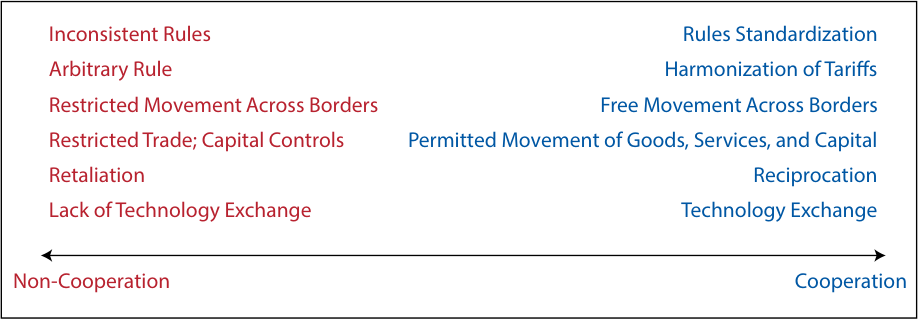
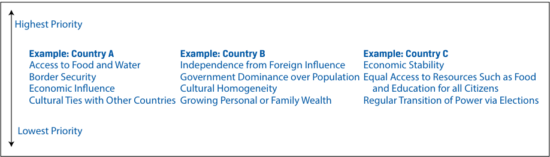

Learning Module 5 Introduction to Geopolitics - Part 1: Introduction
Volume 2: Economics
Learning Module 5 Introduction to Geopolitics
Part 1/4: Introduction (PDF Pages 149–159)
Tập 2: Kinh tế học (Volume 2: Economics)
Học phần 5: Giới thiệu về Địa chính trị (Learning Module 5: Introduction to Geopolitics)
Phần 1/4: Giới thiệu (Introduction) (Trang PDF 149–159)
L E A R N I N G M O D U L E
H Ọ C P H Ầ N (L E A R N I N G M O D U L E)
5
5
Introduction to Geopolitics
Giới thiệu về Địa chính trị (Introduction to Geopolitics)
by Goodwin Lauren, Nair-Reichert Usha, PhD, and Witschi Daniel Rober, PhD.
Tác giả: Goodwin Lauren, Nair-Reichert Usha, PhD, và Witschi Daniel Rober, PhD.
Lauren Goodwin, CFA, is at New York Life Investments (USA). Usha Nair-Reichert, PhD, is at Georgia Institute of Technology (USA). Daniel Robert Witschi, PhD, CFA, is at Dreyfus Sons & Co Ltd. (Switzerland).
Lauren Goodwin, CFA, làm việc tại New York Life Investments (Hoa Kỳ). Usha Nair-Reichert, PhD, làm việc tại Viện Công nghệ Georgia (Georgia Institute of Technology, Hoa Kỳ). Daniel Robert Witschi, PhD, CFA, làm việc tại Dreyfus Sons & Co Ltd. (Thụy Sĩ).
LEARNING OUTCOMES
MỤC TIÊU HỌC TẬP (LEARNING OUTCOMES)
| Mastery | The candidate should be able to: |
|---|---|
| describe geopolitics from a cooperation versus competition perspective |
|
| describe geopolitics and its relationship with globalization | |
| describe functions and objectives of the international organizations that facilitate trade, including the World Bank, the International Monetary Fund, and the World Trade Organization describe geopolitical risk |
|
| describe tools of geopolitics and their impact on regions and economies |
|
| describe the impact of geopolitical risk on investments |
| Mức độ thành thạo (Mastery) | Ứng viên cần có khả năng (The candidate should be able to): |
|---|---|
| mô tả địa chính trị từ góc độ hợp tác so với cạnh tranh (cooperation versus competition perspective) | |
| mô tả địa chính trị và mối quan hệ của nó với toàn cầu hóa (globalization) | |
| mô tả chức năng và mục tiêu của các tổ chức quốc tế tạo thuận lợi cho thương mại, bao gồm Ngân hàng Thế giới (World Bank), Quỹ Tiền tệ Quốc tế (International Monetary Fund – IMF) và Tổ chức Thương mại Thế giới (World Trade Organization – WTO) | |
| mô tả rủi ro địa chính trị (geopolitical risk) | |
| mô tả các công cụ của địa chính trị (tools of geopolitics) và tác động của chúng đối với các khu vực và nền kinh tế | |
| mô tả tác động của rủi ro địa chính trị đối với các khoản đầu tư |
INTRODUCTION
GIỚI THIỆU (INTRODUCTION)
Investors study geopolitics and geopolitical risk because they can have a material impact on investment outcomes. These relations affect key drivers of investment performance, including economic growth, business performance, market volatility, and transaction costs. On a portfolio level, geopolitical risk can affect the suitability of a security or strategy for an investor’s goals, risk tolerance, and time horizon. In this learning module, we will build a framework by which investors can measure, assess, track, and react to geopolitical risk, with a goal of improving investment outcomes.
Các nhà đầu tư nghiên cứu địa chính trị (geopolitics) và rủi ro địa chính trị (geopolitical risk) vì chúng có thể gây ra tác động trọng yếu đến kết quả đầu tư. Những mối quan hệ này ảnh hưởng đến các động lực chính của hiệu quả đầu tư, bao gồm tăng trưởng kinh tế (economic growth), kết quả hoạt động kinh doanh (business performance), biến động thị trường (market volatility) và chi phí giao dịch (transaction costs). Ở cấp độ danh mục đầu tư, rủi ro địa chính trị có thể ảnh hưởng đến sự phù hợp của một chứng khoán hoặc chiến lược đối với mục tiêu, mức độ chấp nhận rủi ro (risk tolerance) và khung thời gian đầu tư (time horizon) của nhà đầu tư. Trong học phần này, chúng ta sẽ xây dựng một khung phân tích giúp các nhà đầu tư có thể đo lường, đánh giá, theo dõi và phản ứng trước rủi ro địa chính trị, với mục tiêu cải thiện kết quả đầu tư.
LEARNING MODULE OVERVIEW
TỔNG QUAN HỌC PHẦN (LEARNING MODULE OVERVIEW)
-
Geopolitics is the study of how geography affects politics and international relations. Within the field of geopolitics, analysts study actors—the individuals, organizations, companies, and national governments that carry out political, economic, and financial activities—and how they interact with one another.
-
State actors can be cooperative or non-cooperative. A country may want to cooperate with its neighbors or with other state actors for many reasons. These reasons are typically defined by a country’s national interest—its goals and ambitions—whether they be military, economic, or cultural.
-
The cooperation and engagement among countries is also affected by its resource endowment, standardization of the rules of engagement, and cultural factors and soft power.
-
A country’s national interest can be viewed as a hierarchy of factors, with those essential for survival at the top of the hierarchy and nicebut-not-essential elements lower in the hierarchy. Governments use the hierarchy of interests to guide their behavior.
-
Political cooperation versus non-cooperation is only one lens through which geopolitical actors engage with the world, but it is an important one for understanding countries’ priorities.
-
Globalization is marked by economic and financial cooperation, including the active trade of goods and services, capital flows, currency exchange, and cultural and information exchange. By contrast, antiglobalization or nationalism is the promotion of a country’s own economic interests to the exclusion or detriment of the interests of other nations. Nationalism is marked by limited economic and financial cooperation.
-
Globalization provides potential gains, such as:
-
increased profits—through increasing sales and/or reducing costs,
-
access to resources—market access and investment opportunities, and
-
intrinsic gains—an improved quality of life.
-
Globalization also has some potential drawbacks, such as:
-
unequal economic and financial gains,
-
interdependence that can lead to supply chain disruption, and
-
possible exploitation of social and environmental resources.
-
The International Monetary Fund’s (IMF’s) main mandate is to ensure the stability of the international monetary system, the system of exchange rates and international payments that enables countries to buy goods and services from each other.
-
The World Bank’s main objective is to help developing countries fight poverty and enhance environmentally sound economic growth.
-
The World Trade Organization (WTO) provides the legal and institutional foundation of the multinational trading system. It regulates cross-border trade relationships among nations on a global scale.
-
Địa chính trị (Geopolitics) là ngành nghiên cứu về cách thức các yếu tố địa lý ảnh hưởng đến chính trị và quan hệ quốc tế. Trong lĩnh vực địa chính trị, các nhà phân tích nghiên cứu các chủ thể (actors) — những cá nhân, tổ chức, công ty và chính phủ quốc gia thực hiện các hoạt động chính trị, kinh tế và tài chính — và cách thức họ tương tác với nhau.
-
Các chủ thể nhà nước (state actors) có thể mang tính hợp tác (cooperative) hoặc bất hợp tác (non-cooperative). Một quốc gia có thể muốn hợp tác với các nước láng giềng hoặc với các chủ thể nhà nước khác vì nhiều lý do. Những lý do này thường được xác định bởi lợi ích quốc gia (national interest) của đất nước đó — tức các mục tiêu và tham vọng của họ — dù là về quân sự, kinh tế hay văn hóa.
-
Sự hợp tác và gắn kết giữa các quốc gia cũng chịu ảnh hưởng bởi nguồn lực tự nhiên sẵn có (resource endowment), sự chuẩn hóa các quy tắc ứng xử (standardization of the rules of engagement), cùng các yếu tố văn hóa và quyền lực mềm (soft power).
-
Lợi ích quốc gia của một đất nước có thể được xem như một hệ thống phân cấp các yếu tố (hierarchy of factors), với những yếu tố thiết yếu cho sự sinh tồn nằm ở đỉnh tháp phân cấp và những yếu tố tốt-nhưng-không-thiết-yếu nằm ở vị trí thấp hơn. Các chính phủ sử dụng hệ thống phân cấp lợi ích (hierarchy of interests) để định hướng hành vi của mình.
-
Hợp tác chính trị so với bất hợp tác chỉ là một lăng kính qua đó các chủ thể địa chính trị tương tác với thế giới, nhưng đó là một lăng kính quan trọng để thấu hiểu các ưu tiên của các quốc gia.
-
Toàn cầu hóa (Globalization) được đặc trưng bởi sự hợp tác kinh tế và tài chính, bao gồm hoạt động trao đổi thương mại hàng hóa và dịch vụ sôi động, các dòng vốn (capital flows), trao đổi tiền tệ (currency exchange), cũng như trao đổi văn hóa và thông tin. Ngược lại, chống toàn cầu hóa (antiglobalization) hay chủ nghĩa dân tộc (nationalism) là việc thúc đẩy lợi ích kinh tế của chính một quốc gia mà loại trừ hoặc gây phương hại đến lợi ích của các quốc gia khác. Chủ nghĩa dân tộc được đặc trưng bởi sự hợp tác kinh tế và tài chính hạn chế.
-
Toàn cầu hóa mang lại những lợi ích tiềm năng, chẳng hạn như:
-
gia tăng lợi nhuận — thông qua việc tăng doanh số bán hàng và/hoặc giảm chi phí,
-
tiếp cận các nguồn lực — tiếp cận thị trường và các cơ hội đầu tư, và
-
lợi ích nội tại (intrinsic gains) — chất lượng cuộc sống được cải thiện.
-
Toàn cầu hóa cũng có một số hạn chế tiềm tàng, chẳng hạn như:
-
lợi ích kinh tế và tài chính phân bổ không đồng đều,
-
sự phụ thuộc lẫn nhau (interdependence) có thể dẫn đến đứt gãy chuỗi cung ứng (supply chain disruption), và
-
khả năng khai thác quá mức các nguồn lực xã hội và môi trường.
-
Nhiệm vụ chính của Quỹ Tiền tệ Quốc tế (International Monetary Fund – IMF) là đảm bảo sự ổn định của hệ thống tiền tệ quốc tế (international monetary system), tức hệ thống tỷ giá hối đoái và thanh toán quốc tế cho phép các quốc gia mua bán hàng hóa và dịch vụ lẫn nhau.
-
Mục tiêu chính của Ngân hàng Thế giới (World Bank) là giúp các nước đang phát triển xóa đói giảm nghèo và thúc đẩy tăng trưởng kinh tế bền vững với môi trường.
-
Tổ chức Thương mại Thế giới (World Trade Organization – WTO) cung cấp nền tảng pháp lý và thể chế cho hệ thống thương mại đa phương. Tổ chức này điều tiết các mối quan hệ thương mại xuyên biên giới giữa các quốc gia trên phạm vi toàn cầu.
| ■ | A geopolitical framework for analysis includes four archetypes of country behavior: autarky, hegemony, multilateralism, and bilateral- ism. Each archetype has its own costs, benefits, and trade-offs with respect to geopolitical risk. |
|---|---|
| ■ | Geopolitical risk is the risk associated with tensions or actions between actors (state and non-state) that affect the normal and peaceful course of international relations. Geopolitical risk tends to rise when the geographic and political factors underpinning country relations shift. |
| ■ | The tools of geopolitics may be separated into the following three types: |
| ● national security tools, |
|
| ● economic tools, and ● financial tools. |
|
| ■ | i The most extreme example of a national security tool is that of armed conflict. Espionage is an indirect national security tool. Military alli- ances are often used either to aid in direct conflict or to deter conflict from arising in the first place. |
| ■ | i Economic tools are used to reinforce a cooperative or non-cooperative stance through economic means. Among state actors, economic tools can include multilateral trade agreements or the global harmonization of tariff rules. Economic tools also can be non-cooperative in nature. Nationalization is a non-cooperative approach to asserting economic control. |
| ■ | Financial tools are the actions used to reinforce a cooperative or non-cooperative stance through financial mechanisms. Examples of cooperative financial tools include the free exchange of currencies across borders and allowing foreign investment. Examples of non-co- operative financial tools include limiting access to local currency markets and restricting foreign investment. |
| ■ | There are three basic types of geopolitical risk: |
| ● event risk, |
|
| ● exogenous risk, and ● thematic risk. |
|
| ■ | Event risk evolves around set dates known in advance. Political events, for example, often result in changes to investor expectations related to a country’s cooperative stance. Brexit is an example of event risk. |
| ■ | Exogenous risk is a sudden or unanticipated risk that can affect either a country’s cooperative stance, the ability of non-state actors to glo- balize, or both. Examples include sudden uprisings, invasions, or the aftermath of natural disasters. |
| ■ | Thematic risks are known risks that evolve and expand over time. Climate change, cyber threats, and the ongoing threat of terrorism fall into this category. |
| ■ | To make an assessment, an investor considers geopolitical risk in terms of the following three areas: ● likelihood it will occur, |
| ■ | Một khung phân tích địa chính trị bao gồm bốn hình mẫu (archetypes) hành vi của quốc gia: tự cung tự cấp (autarky), bá quyền (hegemony), chủ nghĩa đa phương (multilateralism), và chủ nghĩa song phương (bilateralism). Mỗi hình mẫu đều có chi phí, lợi ích và sự đánh đổi riêng đối với rủi ro địa chính trị. |
|---|---|
| ■ | Rủi ro địa chính trị (Geopolitical risk) là rủi ro gắn liền với những căng thẳng hoặc hành động giữa các chủ thể (nhà nước và phi nhà nước) làm ảnh hưởng đến tiến trình bình thường và hòa bình của quan hệ quốc tế. Rủi ro địa chính trị có xu hướng gia tăng khi các yếu tố địa lý và chính trị làm nền tảng cho quan hệ giữa các quốc gia dịch chuyển. |
| ■ | Các công cụ của địa chính trị có thể được chia thành ba loại sau: |
| ● các công cụ an ninh quốc gia (national security tools), | |
| ● các công cụ kinh tế (economic tools), và ● các công cụ tài chính (financial tools). |
|
| ■ | Ví dụ cực đoan nhất của công cụ an ninh quốc gia là xung đột vũ trang (armed conflict). Gián điệp (Espionage) là một công cụ an ninh quốc gia gián tiếp. Các liên minh quân sự (Military alliances) thường được sử dụng để hỗ trợ trong xung đột trực tiếp hoặc để răn đe, ngăn chặn xung đột phát sinh ngay từ đầu. |
| ■ | Các công cụ kinh tế được sử dụng để củng cố lập trường hợp tác hoặc bất hợp tác thông qua các biện pháp kinh tế. Giữa các chủ thể nhà nước, công cụ kinh tế có thể bao gồm các hiệp định thương mại đa phương (multilateral trade agreements) hoặc sự hài hòa hóa toàn cầu các quy tắc thuế quan (harmonization of tariff rules). Các công cụ kinh tế cũng có thể mang bản chất bất hợp tác. Quốc hữu hóa (Nationalization) là một cách tiếp cận bất hợp tác nhằm khẳng định quyền kiểm soát kinh tế. |
| ■ | Các công cụ tài chính là những hành động được sử dụng để củng cố lập trường hợp tác hoặc bất hợp tác thông qua các cơ chế tài chính. Ví dụ về các công cụ tài chính hợp tác bao gồm việc tự do chuyển đổi tiền tệ qua biên giới và cho phép đầu tư nước ngoài. Ví dụ về các công cụ tài chính bất hợp tác bao gồm việc hạn chế tiếp cận thị trường tiền tệ trong nước và hạn chế đầu tư nước ngoài. |
| ■ | Có ba loại rủi ro địa chính trị cơ bản: |
| ● rủi ro sự kiện (event risk), | |
| ● rủi ro ngoại sinh (exogenous risk), và ● rủi ro theo chủ đề / xu hướng dài hạn (thematic risk). |
|
| ■ | Rủi ro sự kiện (Event risk) xoay quanh những ngày ấn định đã được biết trước. Ví dụ, các sự kiện chính trị thường dẫn đến những thay đổi trong kỳ vọng của nhà đầu tư liên quan đến lập trường hợp tác của một quốc gia. Sự kiện Brexit là một ví dụ về rủi ro sự kiện. |
| ■ | Rủi ro ngoại sinh (Exogenous risk) là một rủi ro đột ngột hoặc không lường trước được, có thể ảnh hưởng đến lập trường hợp tác của một quốc gia, khả năng toàn cầu hóa của các chủ thể phi nhà nước, hoặc cả hai. Các ví dụ bao gồm các cuộc nổi dậy bất ngờ, các cuộc xâm lược, hoặc hậu quả của thiên tai. |
| ■ | Rủi ro theo chủ đề (Thematic risks) là những rủi ro đã được nhận diện nhưng phát triển và mở rộng theo thời gian. Biến đổi khí hậu, các mối đe dọa an ninh mạng và mối đe dọa khủng bố thường trực thuộc nhóm này. |
| ■ | Để đưa ra đánh giá, nhà đầu tư xem xét rủi ro địa chính trị trên ba khía cạnh sau: ● xác suất xảy ra rủi ro (likelihood it will occur), |
-
velocity (speed) of its impact, and
-
size and nature of that impact.
-
Geopolitical risks seldom develop in linear fashion, making it difficult to monitor and forecast their likelihood, velocity, and size and nature of impact on a portfolio. As a result, many investors deploy an approach that includes scenario building and signposting rather than a single point forecast.
-
Investors study geopolitical risk because it has a tangible impact on investment outcomes. On a macroeconomic level, these risks can affect capital markets conditions, such as economic growth, interest rates, and market volatility.
-
Changes in capital markets conditions can have an important influence on asset allocation decisions, including an investor’s choice of geographic exposures.
-
On a portfolio level, geopolitical risk can influence the appropriateness of an investment security or strategy for an investor’s goals, risk tolerance, and time horizon.
-
tốc độ (velocity/speed) tác động của nó, và
-
quy mô và bản chất của tác động đó (size and nature of that impact).
-
Rủi ro địa chính trị hiếm khi diễn biến theo kiểu tuyến tính, khiến việc theo dõi và dự báo xác suất, tốc độ cũng như quy mô và bản chất tác động của chúng lên danh mục đầu tư trở nên khó khăn. Do đó, nhiều nhà đầu tư triển khai một phương pháp tiếp cận bao gồm xây dựng kịch bản (scenario building) và theo dõi các dấu hiệu chỉ báo (signposting) thay vì dự báo điểm đơn lẻ (single point forecast).
-
Các nhà đầu tư nghiên cứu rủi ro địa chính trị vì nó có tác động hữu hình đến kết quả đầu tư. Ở cấp độ kinh tế vĩ mô, những rủi ro này có thể ảnh hưởng đến các điều kiện trên thị trường vốn (capital markets conditions), chẳng hạn như tăng trưởng kinh tế, lãi suất và mức độ biến động của thị trường.
-
Những thay đổi trong điều kiện thị trường vốn có thể có ảnh hưởng quan trọng đến các quyết định phân bổ tài sản (asset allocation decisions), bao gồm cả sự lựa chọn mức độ tiếp xúc theo khu vực địa lý (geographic exposures) của nhà đầu tư.
-
Ở cấp độ danh mục đầu tư, rủi ro địa chính trị có thể ảnh hưởng đến mức độ phù hợp của một chứng khoán hoặc chiến lược đầu tư đối với mục tiêu, mức độ chấp nhận rủi ro và khung thời gian đầu tư của nhà đầu tư.
2
2
NATIONAL GOVERNMENTS AND POLITICAL COOPERATION
CHÍNH PHỦ QUỐC GIA VÀ HỢP TÁC CHÍNH TRỊ (NATIONAL GOVERNMENTS AND POLITICAL COOPERATION)
describe geopolitics from a cooperation versus competition perspective
mô tả địa chính trị từ góc độ hợp tác so với cạnh tranh (describe geopolitics from a cooperation versus competition perspective)
The international environment is constantly evolving. Such trends as the growth of emerging market economies, globalization, and the rise of populism affect the range of opportunities and threats that companies, industries, nations, and regional groups face. Geopolitics is the study of how geography affects politics and international relations. Within the field of geopolitics, analysts study actors—the individuals, organizations, companies, and national governments that carry out political, economic, and financial activities—and how they interact with one another. The role of state and non-state actors is discussed in the following section.
Môi trường quốc tế luôn không ngừng vận động. Những xu hướng như sự tăng trưởng của các nền kinh tế thị trường mới nổi (emerging market economies), toàn cầu hóa và sự trỗi dậy của chủ nghĩa dân túy (populism) đều tác động đến phạm vi các cơ hội và mối đe dọa mà các công ty, ngành công nghiệp, quốc gia và các nhóm khu vực phải đối mặt. Địa chính trị (Geopolitics) là ngành nghiên cứu về cách thức địa lý ảnh hưởng đến chính trị và quan hệ quốc tế. Trong lĩnh vực địa chính trị, các nhà phân tích nghiên cứu các chủ thể (actors) — các cá nhân, tổ chức, công ty và chính phủ quốc gia thực hiện các hoạt động chính trị, kinh tế và tài chính — và cách họ tương tác với nhau. Vai trò của các chủ thể nhà nước và phi nhà nước được thảo luận trong phần tiếp theo.
State and Non-State Actors
Chủ thể Nhà nước và Chủ thể Phi nhà nước (State and Non-State Actors)
Relationships within and among countries can be complex. To begin, many actors influence international relations, political developments, and economic affairs. In the introduction, we defined actors as the individuals, organizations, companies, and national governments that carry out political, economic, and financial activities. This definition can be divided into two types of actors relevant for geopolitical risk: state actors and non-state actors. State actors are typically national governments, political organizations, or country leaders that exert authority over a country’s national security and resources. The South African president, sultan of Brunei, Malaysia’s parliament, and the British Prime minister are all examples of state actors. Non-state actors are those that participate in global political, economic, or financial affairs but do not
Các mối quan hệ bên trong mỗi quốc gia và giữa các quốc gia với nhau có thể rất phức tạp. Trước hết, có rất nhiều chủ thể ảnh hưởng đến quan hệ quốc tế, các diễn biến chính trị và các vấn đề kinh tế. Trong phần giới thiệu, chúng ta đã định nghĩa các chủ thể (actors) là những cá nhân, tổ chức, công ty và chính phủ quốc gia thực hiện các hoạt động chính trị, kinh tế và tài chính. Định nghĩa này có thể được chia thành hai loại chủ thể có liên quan đến rủi ro địa chính trị: chủ thể nhà nước và chủ thể phi nhà nước. Chủ thể nhà nước (State actors) thường là các chính phủ quốc gia, các tổ chức chính trị hoặc các nhà lãnh đạo đất nước thực thi quyền lực đối với an ninh quốc gia và tài nguyên của một đất nước. Tổng thống Nam Phi, Quốc vương Brunei, Quốc hội Malaysia và Thủ tướng Anh đều là những ví dụ về các chủ thể nhà nước. Chủ thể phi nhà nước (Non-state actors) là những chủ thể tham gia vào các vấn đề chính trị, kinh tế hoặc tài chính toàn cầu nhưng không
directly control national security or country resources. Examples of non-state actors are non-governmental organizations (NGOs), multinational companies, charities, and even influential individuals, such as business leaders or cultural icons.
trực tiếp kiểm soát an ninh quốc gia hay tài nguyên đất nước. Ví dụ về các chủ thể phi nhà nước là các tổ chức phi chính phủ (non-governmental organizations – NGOs), các công ty đa quốc gia (multinational companies), các tổ chức từ thiện, và thậm chí cả những cá nhân có tầm ảnh hưởng như các nhà lãnh đạo doanh nghiệp hoặc các biểu tượng văn hóa.
These actors are influenced not only by their relationship with one another but also by factors affecting their other allies and adversaries. For example, if Country A has a cooperative relationship with Country B but Country B attacks Country C, a close ally of Country A, then the relationship between Countries A and B may become strained or even broken. The opposite is also true: A country’s cooperation across many political, economic, or financial channels may increase trust over time. As a result, the international system is composed of multifaceted webs of affairs that can shape events and decisions as well as economic and market outcomes. Although a “one-size-fits-all” model does not exist for geopolitical actors, understanding and categorizing the threats and opportunities that a country faces may help us to gauge the likelihood that geopolitical risk will arise.
Các chủ thể này không chỉ chịu ảnh hưởng bởi mối quan hệ giữa họ với nhau mà còn bởi các yếu tố tác động đến các đồng minh và đối thủ khác của họ. Ví dụ, nếu Quốc gia A có mối quan hệ hợp tác với Quốc gia B nhưng Quốc gia B lại tấn công Quốc gia C — một đồng minh thân cận của Quốc gia A — thì mối quan hệ giữa Quốc gia A và B có thể trở nên căng thẳng hoặc thậm chí tan vỡ. Điều ngược lại cũng đúng: Sự hợp tác của một quốc gia trên nhiều kênh chính trị, kinh tế hoặc tài chính có thể làm gia tăng sự tin cậy theo thời gian. Kết quả là, hệ thống quốc tế được cấu thành từ những mạng lưới quan hệ đa diện có khả năng định hình các sự kiện và quyết định cũng như các kết quả kinh tế và thị trường. Mặc dù không tồn tại một mô hình “áp dụng chung cho tất cả” (one-size-fits-all) đối với các chủ thể địa chính trị, việc thấu hiểu và phân loại các mối đe dọa cũng như cơ hội mà một quốc gia phải đối mặt có thể giúp chúng ta đánh giá khả năng phát sinh rủi ro địa chính trị.
Countries and their governments are heavily influenced by economic, financial, and national security considerations as well as by social and cultural factors and non-state actors. In fact, economic and financial considerations are inextricably linked with a country’s national interest and political dynamic. That said, it is useful to isolate one of these areas—national actors and political cooperation—as a starting point in understanding actors’ interwoven goals and the way they may affect geopolitical risk. In the next section, we will develop a sense of state actors and their motivations for cooperation (versus non-cooperation) before adding layers of geopolitical risk analysis.
Các quốc gia và chính phủ của họ chịu ảnh hưởng nặng nề bởi các cân nhắc về kinh tế, tài chính và an ninh quốc gia, cũng như bởi các yếu tố xã hội, văn hóa và các chủ thể phi nhà nước. Trên thực tế, các cân nhắc về kinh tế và tài chính gắn kết chặt chẽ không thể tách rời với lợi ích quốc gia và động lực chính trị của một đất nước. Tuy nhiên, việc tách riêng một trong những lĩnh vực này — các chủ thể quốc gia và sự hợp tác chính trị — là rất hữu ích để làm điểm khởi đầu nhằm tìm hiểu các mục tiêu đan xen của các chủ thể và cách chúng có thể tác động đến rủi ro địa chính trị. Trong phần tiếp theo, chúng ta sẽ tìm hiểu về các chủ thể nhà nước và động cơ hợp tác (so với bất hợp tác) của họ trước khi bổ sung thêm các tầng phân tích rủi ro địa chính trị.
Features of Political Cooperation
Các đặc điểm của Hợp tác Chính trị (Features of Political Cooperation)
At the highest level, relations between countries or national governments (state actors) can be cooperative or competitive in nature. Cooperation is the process by which countries work together toward some shared goal or purpose. These goals may, and often do, vary widely—from strategic or military concerns to economic influence or cultural preferences. Given the expansive nature of country goals and interests, their interactions with one another also may be complex, generating the potential for geopolitical risk to arise.
Ở cấp độ cao nhất, mối quan hệ giữa các quốc gia hoặc các chính phủ quốc gia (các chủ thể nhà nước) có thể mang bản chất hợp tác hoặc cạnh tranh. Hợp tác (Cooperation) là quá trình mà qua đó các quốc gia làm việc cùng nhau hướng tới một mục tiêu hoặc mục đích chung nào đó. Những mục tiêu này có thể, và thường xuyên, rất khác biệt — từ những mối quan tâm chiến lược hoặc quân sự cho đến tầm ảnh hưởng kinh tế hoặc các sở thích văn hóa. Do bản chất rộng lớn của các mục tiêu và lợi ích quốc gia, sự tương tác giữa họ với nhau cũng có thể rất phức tạp, tạo ra khả năng phát sinh rủi ro địa chính trị.
We begin that framework by exploring one specific type of cooperation—political cooperation—which is the degree to which countries work toward agreements on rules and standardization for the activities and interactions between them. Within this context, a cooperative country is one that engages and reciprocates in rules standardization; harmonization of tariffs; and international agreements on trade, immigration, or regulation and that also allows for the free flow of information, including technology transfer. In contrast, a non-cooperative country is one with inconsistent and even arbitrary rules; restricted movement of goods, services, people, and capital across borders; retaliation; and limited technology exchange. We show the degree of political cooperation in Exhibit 1
Chúng ta bắt đầu khung phân tích đó bằng cách khám phá một loại hình hợp tác cụ thể — hợp tác chính trị (political cooperation) — là mức độ mà các quốc gia cùng nhau hướng tới các thỏa thuận về quy tắc và sự chuẩn hóa cho các hoạt động cũng như tương tác giữa họ. Trong bối cảnh này, một quốc gia hợp tác (cooperative country) là quốc gia tham gia và có sự đi lại tương xứng (reciprocates) trong việc chuẩn hóa quy tắc; hài hòa hóa thuế quan; và tham gia các hiệp định quốc tế về thương mại, nhập cư hoặc quy định pháp lý, đồng thời cho phép dòng chảy thông tin tự do, bao gồm cả chuyển giao công nghệ (technology transfer). Ngược lại, một quốc gia bất hợp tác (non-cooperative country) là quốc gia có các quy tắc thiếu nhất quán và thậm chí độc đoán, tùy tiện; hạn chế sự di chuyển của hàng hóa, dịch vụ, con người và vốn qua biên giới; có hành vi trả đũa (retaliation); và hạn chế trao đổi công nghệ. Chúng tôi thể hiện mức độ hợp tác chính trị trong Bảng minh họa 1 (Exhibit 1).
Exhibit 1: Political Cooperation and Non-Cooperation
Bảng minh họa 1: Hợp tác và Bất hợp tác Chính trị (Exhibit 1: Political Cooperation and Non-Cooperation)

Chú thích hình ảnh: - Bất hợp tác (Non-Cooperation): Quy tắc thiếu nhất quán (Inconsistent Rules); Quy tắc tùy tiện/độc đoán (Arbitrary Rule); Hạn chế di chuyển qua biên giới (Restricted Movement Across Borders); Hạn chế thương mại, Kiểm soát vốn (Restricted Trade; Capital Controls); Trả đũa (Retaliation); Thiếu trao đổi công nghệ (Lack of Technology Exchange). - Hợp tác (Cooperation): Chuẩn hóa quy tắc (Rules Standardization); Hài hòa hóa thuế quan (Harmonization of Tariffs); Tự do di chuyển qua biên giới (Free Movement Across Borders); Cho phép di chuyển hàng hóa, dịch vụ và vốn (Permitted Movement of Goods, Services, and Capital); Có đi có lại / Tương hỗ (Reciprocation); Trao đổi công nghệ (Technology Exchange).
A country may want to cooperate with its neighbors or with other state actors for many reasons. These reasons are typically defined by a country’s national interest—its goals and ambitions—whether they be military, economic, or cultural.
Một quốc gia có thể muốn hợp tác với các nước láng giềng hoặc với các chủ thể nhà nước khác vì nhiều lý do. Những lý do này thường được xác định bởi lợi ích quốc gia (national interest) của đất nước đó — tức các mục tiêu và tham vọng của họ — dù là về quân sự, kinh tế hay văn hóa.
National Security or Military Interest
Lợi ích An ninh Quốc gia hoặc Quân sự (National Security or Military Interest)
National security or national defense involves protecting a country, including its citizens, economy, and institutions, from external threat. These threats may be broad in nature—from military attacks and terrorism, to crime, cybersecurity, and even natural disasters.
An ninh quốc gia (National security) hay quốc phòng (national defense) bao gồm việc bảo vệ một đất nước, bao gồm công dân, nền kinh tế và các định chế của nước đó, khỏi các mối đe dọa từ bên ngoài. Những mối đe dọa này có thể mang bản chất rất rộng — từ các cuộc tấn công quân sự và khủng bố, cho đến tội phạm, an ninh mạng và thậm chí cả thiên tai.
Geographic factors play an important role in shaping a country’s approach to national security and the extent to which it will choose a cooperative approach. Landlocked countries, such as Switzerland, rely extensively on their neighbors for access to vital resources. This reliance may make cooperation more important for sustaining international access and growth or even for survival. By the same token, countries highly connected to trade routes, such as Singapore, or countries acting as a conduit for trade, such as Panama, may use their geographic location as a lever of power in broader international dynamics.
Các yếu tố địa lý đóng một vai trò quan trọng trong việc định hình cách tiếp cận của một quốc gia đối với an ninh quốc gia và mức độ mà quốc gia đó sẽ lựa chọn cách tiếp cận hợp tác. Các quốc gia không giáp biển (landlocked countries), chẳng hạn như Thụy Sĩ, phụ thuộc rất nhiều vào các nước láng giềng để tiếp cận các nguồn lực thiết yếu. Sự phụ thuộc này có thể khiến việc hợp tác trở nên quan trọng hơn để duy trì khả năng tiếp cận quốc tế và tăng trưởng, hoặc thậm chí là để sinh tồn. Tương tự như vậy, các quốc gia có kết nối chặt chẽ với các tuyến đường thương mại, chẳng hạn như Singapore, hoặc các quốc gia đóng vai trò là tuyến trung chuyển thương mại (conduit for trade), chẳng hạn như Panama, có thể sử dụng vị trí địa lý của mình như một đòn bẩy quyền lực trong các động lực quốc tế rộng lớn hơn.
Economic Interest
Lợi ích Kinh tế (Economic Interest)
Over time, the concept of national security has expanded to include economic factors, including access to such resources as energy, food, or water. On a domestic level, growing national wealth and limiting income inequality can contribute to social stability, another important component of national security. On the international level, the ability of national firms to operate on a global scale is increasingly important as well. In this context, countries that cooperate in support of their economic interest are likely focused on one of two factors: Either they would like to secure essential resources through trade, or they would like to level the global playing field for their companies or industries through standardization.
Theo thời gian, khái niệm an ninh quốc gia đã mở rộng để bao hàm cả các yếu tố kinh tế, bao gồm việc tiếp cận các nguồn tài nguyên như năng lượng, lương thực hoặc nước. Ở cấp độ trong nước, việc gia tăng sự giàu có của quốc gia và hạn chế bất bình đẳng thu nhập có thể góp phần vào sự ổn định xã hội, một cấu phần quan trọng khác của an ninh quốc gia. Ở cấp độ quốc tế, khả năng hoạt động trên quy mô toàn cầu của các doanh nghiệp trong nước cũng ngày càng trở nên quan trọng. Trong bối cảnh này, các quốc gia hợp tác để hỗ trợ cho lợi ích kinh tế của mình thường tập trung vào một trong hai yếu tố: Hoặc là họ muốn đảm bảo các nguồn lực thiết yếu thông qua thương mại (trade), hoặc là họ muốn tạo lập một sân chơi toàn cầu bình đẳng cho các công ty hoặc ngành công nghiệp của mình thông qua sự chuẩn hóa (standardization).
EXAMPLE 1
VÍ DỤ 1 (EXAMPLE 1)
Factors Affecting Cooperation
Các yếu tố ảnh hưởng đến sự hợp tác (Factors Affecting Cooperation)
- True or false: Geographic factors do not influence the extent to which a country will choose a cooperative approach. Explain your reasoning.
- A. True
- Đúng hay sai: Các yếu tố địa lý không ảnh hưởng đến mức độ mà một quốc gia sẽ lựa chọn cách tiếp cận hợp tác. Hãy giải thích lập luận của bạn.
- A. Đúng (True)
B. False
- B. Sai (False)
Solution:
Lời giải (Solution):
B is correct. Geographic factors play an important role in shaping a country’s approach to national security and the extent to which it will choose a cooperative approach. A country with limited access to resources because of its geographic characteristics might be more inclined to cooperate as it needs access to resources to thrive, whereas a country rich in internal resources might use its resources as leverage to influence international dynamics. Countries with direct access to the sea have an advantage related to trade and transport as well as the natural resources provided by the ocean.
B là đáp án đúng. Các yếu tố địa lý đóng vai trò quan trọng trong việc định hình cách tiếp cận của một quốc gia đối với an ninh quốc gia và mức độ mà quốc gia đó sẽ lựa chọn cách tiếp cận hợp tác. Một quốc gia có khả năng tiếp cận hạn chế với các nguồn tài nguyên do đặc điểm địa lý của mình có thể có xu hướng hợp tác nhiều hơn vì họ cần tiếp cận tài nguyên để phát triển thịnh vượng, trong khi một quốc gia giàu tài nguyên nội địa có thể sử dụng tài nguyên của mình làm đòn bẩy để gây ảnh hưởng đến các động lực quốc tế. Các quốc gia có đường ra biển trực tiếp có lợi thế liên quan đến thương mại và vận tải cũng như các nguồn tài nguyên thiên nhiên do đại dương cung cấp.
EXAMPLE 2
VÍ DỤ 2 (EXAMPLE 2)
Factors Affecting Cooperation
Các yếu tố ảnh hưởng đến sự hợp tác (Factors Affecting Cooperation)
- Fill in the blank: Two factors on which a cooperative country is likely focused include_ and.
- Điền vào chỗ trống: Hai yếu tố mà một quốc gia hợp tác nhiều khả năng sẽ tập trung vào bao gồm _ và .
Solution:
Lời giải (Solution):
Two factors on which a cooperative country is likely focused include trade and standardization .
Hai yếu tố mà một quốc gia hợp tác nhiều khả năng sẽ tập trung vào bao gồm thương mại (trade) và sự chuẩn hóa (standardization).
Resource Endowment, Standardization, and Soft Power
Nguồn lực tự nhiên sẵn có, Sự chuẩn hóa và Quyền lực mềm (Resource Endowment, Standardization, and Soft Power)
The cooperation and engagement among countries is also affected by its resource endowment, standardization of the rules of engagement, and cultural factors and soft power. These factors are examined in the section that follows.
Sự hợp tác và gắn kết giữa các quốc gia cũng chịu ảnh hưởng bởi nguồn lực tự nhiên sẵn có (resource endowment), sự chuẩn hóa các quy tắc ứng xử (standardization of the rules of engagement), cùng các yếu tố văn hóa và quyền lực mềm (soft power). Những yếu tố này được xem xét trong phần tiếp theo.
Geophysical Resource Endowment
Nguồn lực Địa vật lý Sẵn có (Geophysical Resource Endowment)
At a basic level, geophysical resource endowment includes such factors as livable geography and climate as well as access to food and water, which are necessary for sustainable growth. Geophysical resource endowment is highly unequal among countries. Some countries, such as the United States, Russia, Australia, and China, are relatively self-sufficient in their resource use. Others, such as Western Europe, Japan, and Turkey, are highly reliant on others for key factors of production, such as fossil fuels. Still others, such as Saudi Arabia, have a plentiful endowment of fossil fuels but rely on others for many basic needs.
Ở cấp độ cơ bản, nguồn lực địa vật lý sẵn có (geophysical resource endowment) bao gồm các yếu tố như địa lý và khí hậu có thể sinh sống được cũng như khả năng tiếp cận lương thực và nước uống — những yếu tố cần thiết cho sự tăng trưởng bền vững. Nguồn lực địa vật lý sẵn có là hết sức không đồng đều giữa các quốc gia. Một số quốc gia, chẳng hạn như Hoa Kỳ, Nga, Úc và Trung Quốc, tương đối tự chủ trong việc sử dụng tài nguyên của mình. Những khu vực và quốc gia khác, chẳng hạn như Tây Âu, Nhật Bản và Thổ Nhĩ Kỳ, lại phụ thuộc rất nhiều vào các nước khác đối với các yếu tố sản xuất chính, chẳng hạn như nhiên liệu hóa thạch. Lại có những quốc gia khác, chẳng hạn như Ả Rập Xê Út, có nguồn nhiên liệu hóa thạch dồi dào nhưng lại phụ thuộc vào các nước khác đối với nhiều nhu cầu cơ bản.
These different starting points create power dynamics that can affect the terms of engagement between states. A country heavily endowed with a resource may find itself with more political leverage when dealing with another country in desperate need of that resource. At the same time, a resource-rich country may become vulnerable if the use or sale of the resource benefits certain groups more than others, therefore contributing to internal political instability.
Những xuất phát điểm khác nhau này tạo ra các động lực quyền lực có thể ảnh hưởng đến các điều khoản cam kết và tương tác giữa các quốc gia. Một quốc gia được thiên nhiên ưu đãi dồi dào một loại tài nguyên có thể thấy mình có nhiều đòn bẩy chính trị hơn khi giao dịch với một quốc gia khác đang rất cần nguồn tài nguyên đó. Đồng thời, một quốc gia giàu tài nguyên có thể trở nên dễ bị tổn thương nếu việc sử dụng hoặc bán tài nguyên đó mang lại lợi ích cho một số nhóm nhất định nhiều hơn các nhóm khác, từ đó góp phần gây ra sự bất ổn chính trị nội bộ.
Standardization
Sự chuẩn hóa (Standardization)
Economic and financial activities may cross borders with or without explicit government support. As they do, governments have more incentive to cooperate with others in standardizing the rules of engagement. Standardization is the process of creating protocols for the production, sale, transport, or use of a product or service. Standardization occurs when relevant parties agree to follow these protocols together. It helps support expanded economic and financial activities across borders, such as
Các hoạt động kinh tế và tài chính có thể vượt qua biên giới dù có hay không có sự hỗ trợ rõ ràng của chính phủ. Khi điều đó diễn ra, các chính phủ có nhiều động lực hơn để hợp tác với các nước khác trong việc chuẩn hóa các quy tắc ứng xử. Sự chuẩn hóa (Standardization) là quá trình tạo lập các giao thức (protocols) cho việc sản xuất, bán hàng, vận chuyển hoặc sử dụng một sản phẩm hay dịch vụ. Sự chuẩn hóa diễn ra khi các bên liên quan đồng ý cùng nhau tuân theo các giao thức này. Nó giúp hỗ trợ mở rộng các hoạt động kinh tế và tài chính xuyên biên giới, chẳng hạn như
trade and capital flows, which support higher economic growth and standards of living. Rules standardization can take many forms—from regulatory cooperation, to process standardization, to operational synchronization. Rules standardization may also be driven by non-state entities, such as industry groups or organizations. Exhibit 2 provides examples of standardization.
thương mại và các dòng vốn, qua đó hỗ trợ tăng trưởng kinh tế và mức sống cao hơn. Việc chuẩn hóa quy tắc có thể diễn ra dưới nhiều hình thức — từ hợp tác quản lý (regulatory cooperation), chuẩn hóa quy trình (process standardization), cho đến đồng bộ hóa vận hành (operational synchronization). Việc chuẩn hóa quy tắc cũng có thể được thúc đẩy bởi các thực thể phi nhà nước, chẳng hạn như các hiệp hội ngành nghề hoặc các tổ chức. Bảng minh họa 2 (Exhibit 2) cung cấp các ví dụ về sự chuẩn hóa.
Exhibit 2: Types of Rules Standardization
Bảng minh họa 2: Các loại hình Chuẩn hóa Quy tắc (Exhibit 2: Types of Rules Standardization)
| Regulatory Cooperation | Process Standardization | Operational Synchronization | |
|---|---|---|---|
| Challenge | As financial cooperation expands, countries need a comprehensive standard for governance and risk management of the banking sector. |
Financial transactions across bor- ders faced higher costs and longer wait times, increasing the burden for cross-border activity. |
Increasing international trade created supply chain bottlenecks as containers of different sizes and shapes were sent to ports worldwide. |
| Solution | Basel Committee on Banking Supervision (BCBS) |
Society for Worldwide Interbank Financial Telecommunication (SWIFT) |
Containerization |
| Process | The BCBS was established in 1974 by the G–10 banking authorities. Membership has since expanded to the G–20. |
SWIFT was established in 1973 to provide a global financial infrastructure. |
Standards set for containers of uniform size and shape using mul- timodal forms of transport (land, sea, air, rail) and port cranes. |
| Benefit | Allows for more effective supervi- sion of the global banking sector and international capital flows. |
Facilitates global payments in more than 200 countries and territories, ser- vicing more than 11,000 institutions worldwide. |
Dramatically reduces the time and cost of shipping goods. |
| Hợp tác Quản lý (Regulatory Cooperation) | Chuẩn hóa Quy trình (Process Standardization) | Đồng bộ hóa Vận hành (Operational Synchronization) | |
|---|---|---|---|
| Thách thức (Challenge) | Khi hợp tác tài chính mở rộng, các quốc gia cần một tiêu chuẩn toàn diện về quản trị và quản lý rủi ro đối với lĩnh vực ngân hàng. | Các giao dịch tài chính xuyên biên giới phải đối mặt với chi phí cao hơn và thời gian chờ đợi lâu hơn, làm tăng gánh nặng cho hoạt động xuyên biên giới. | Thương mại quốc tế gia tăng đã tạo ra các điểm nghẽn trong chuỗi cung ứng khi các thùng chứa hàng (container) có kích thước và hình dạng khác nhau được gửi đến các cảng trên toàn thế giới. |
| Giải pháp (Solution) | Ủy ban Basel về Giám sát Ngân hàng (Basel Committee on Banking Supervision – BCBS) | Hiệp hội Viễn thông Tài chính Liên ngân hàng Toàn cầu (Society for Worldwide Interbank Financial Telecommunication – SWIFT) | Công-ten-nơ hóa (Containerization) |
| Quy trình (Process) | BCBS được thành lập vào năm 1974 bởi các cơ quan quản lý ngân hàng nhóm G–10. Tư cách thành viên sau đó đã mở rộng sang nhóm G–20. | SWIFT được thành lập vào năm 1973 nhằm cung cấp một cơ sở hạ tầng tài chính toàn cầu. | Các tiêu chuẩn được thiết lập cho các thùng container có kích thước và hình dạng đồng nhất sử dụng các phương thức vận tải đa phương thức (đường bộ, đường biển, đường hàng không, đường sắt) và cần cẩu tại cảng. |
| Lợi ích (Benefit) | Cho phép giám sát hiệu quả hơn đối với lĩnh vực ngân hàng toàn cầu và các dòng vốn quốc tế. | Tạo thuận lợi cho các khoản thanh toán toàn cầu tại hơn 200 quốc gia và vùng lãnh thổ, phục vụ hơn 11.000 định chế trên toàn thế giới. | Giảm đáng kể thời gian và chi phí vận chuyển hàng hóa. |
Cultural Considerations and Soft Power
Các cân nhắc về Văn hóa và Quyền lực mềm (Cultural Considerations and Soft Power)
Finally, countries may have cultural reasons for cooperating with others. These could be historical in nature, such as long-standing political ties, immigration patterns, shared experiences, or cultural similarities. In other cases, countries may engage in soft power , a means of influencing another country’s decisions without force or coercion. Soft power can be built over time through such actions as cultural programs, advertisement, travel grants, and university exchange. For example, the European Union (EU) Erasmus+ program provides funding for exchange programs in education and sport to drive social inclusion and participation between participants from different countries and also to promote such priority policies as the EU’s green and digital transitions. In another example, countries like South Korea advertise visiting Seoul, the country’s capital city, in subway systems globally. These advertisements use popular Korean-made products, musical acts, and actors to encourage interaction with Korean culture and business.
Cuối cùng, các quốc gia có thể có những lý do văn hóa để hợp tác với các nước khác. Những lý do này có thể mang bản chất lịch sử, chẳng hạn như mối quan hệ chính trị lâu đời, các mô hình di cư, những trải nghiệm được chia sẻ, hoặc những nét tương đồng về văn hóa. Trong các trường hợp khác, các quốc gia có thể sử dụng quyền lực mềm (soft power), một phương thức gây ảnh hưởng đến quyết định của quốc gia khác mà không dùng đến vũ lực hay sự ép buộc. Quyền lực mềm có thể được xây dựng theo thời gian thông qua các hành động như các chương trình văn hóa, quảng cáo, tài trợ du lịch và trao đổi đại học. Ví dụ, chương trình Erasmus+ của Liên minh Châu Âu (EU) cung cấp kinh phí cho các chương trình trao đổi trong giáo dục và thể thao nhằm thúc đẩy sự hòa nhập xã hội và sự tham gia giữa những người tham gia từ các quốc gia khác nhau, đồng thời thúc đẩy các chính sách ưu tiên như quá trình chuyển đổi xanh và chuyển đổi số của EU. Trong một ví dụ khác, các quốc gia như Hàn Quốc quảng cáo việc ghé thăm Seoul, thủ đô của đất nước, tại các hệ thống tàu điện ngầm trên toàn cầu. Những quảng cáo này sử dụng các sản phẩm phổ biến do Hàn Quốc sản xuất, các nhóm nhạc và diễn viên để khuyến khích sự tương tác với văn hóa và doanh nghiệp Hàn Quốc.
The Role of Institutions
Vai trò của các Định chế (The Role of Institutions)
An institution is an established organization or practice in a society or culture. An institution can be a formal structure, such as a university, organization, or process backed by law; or, it can be informal, such as customs or behavioral patterns important to a society. Institutions can, but need not be, formed by national governments. Examples of institutions include NGOs, charities, religious customs, family units, the media, political parties, and educational practice.
Một định chế / thể chế (institution) là một tổ chức hoặc tập quán đã được thiết lập vững chắc trong một xã hội hoặc nền văn hóa. Một định chế có thể là một cấu trúc chính thức, chẳng hạn như một trường đại học, tổ chức, hoặc quy trình được pháp luật hậu thuẫn; hoặc nó có thể là phi chính thức, chẳng hạn như các phong tục tập quán hoặc các khuôn mẫu hành vi quan trọng đối với một xã hội. Các định chế có thể, nhưng không nhất thiết phải, được thành lập bởi các chính phủ quốc gia. Ví dụ về các định chế bao gồm các tổ chức phi chính phủ (NGOs), các tổ chức từ thiện, phong tục tôn giáo, các đơn vị gia đình, truyền thông, các đảng phái chính trị và thông lệ giáo dục.
Generally, strong institutions contribute to more stable internal and external political forces. That consistency, in turn, gives a country more opportunity to develop cooperative relationships. Countries with strong institutions—including organizations
Nhìn chung, các định chế vững mạnh góp phần tạo nên các lực lượng chính trị nội bộ và đối ngoại ổn định hơn. Sự nhất quán đó, đến lượt nó, mang lại cho một quốc gia nhiều cơ hội hơn để phát triển các mối quan hệ hợp tác. Các quốc gia có các định chế vững mạnh — bao gồm các tổ chức
and structures promoting government accountability, rule of law, and property rights— allow them to act with more authority and independence in the international space. Stronger institutions also make cooperative relationships more durable. By integrating a cooperative relationship in multiple layers of society, strong institutions can reduce the likelihood that a country defects from its cooperative roles.
và cấu trúc thúc đẩy trách nhiệm giải trình của chính phủ (government accountability), pháp quyền (rule of law) và quyền sở hữu tài sản (property rights) — cho phép họ hành động với nhiều thẩm quyền và sự độc lập hơn trong không gian quốc tế. Các định chế vững mạnh hơn cũng làm cho các mối quan hệ hợp tác trở nên bền vững hơn. Bằng cách tích hợp mối quan hệ hợp tác vào nhiều tầng lớp của xã hội, các định chế vững mạnh có thể làm giảm khả năng một quốc gia từ bỏ vai trò hợp tác của mình.
Hierarchy of Interests and Costs of Cooperation
Hệ thống phân cấp Lợi ích và Chi phí của sự Hợp tác (Hierarchy of Interests and Costs of Cooperation)
The national interest of a country is its set of goals and ambitions. For some countries, national interest is viewed primarily in geospatial terms—the need for self-determination, survival as a nation state, the need for clear national borders, or expansion of the nation state. For others, national interest incorporates a wide array of interrelated factors, including the economic and social considerations discussed earlier. This broad approach can create conflicts among a country’s many important needs, which complicates the assessment of geopolitical actors and their motivations.
Lợi ích quốc gia (national interest) của một đất nước là tập hợp các mục tiêu và tham vọng của nước đó. Đối với một số quốc gia, lợi ích quốc gia được nhìn nhận chủ yếu dưới góc độ không gian địa lý (geospatial terms) — nhu cầu tự quyết (self-determination), sự sinh tồn với tư cách là một quốc gia dân tộc, nhu cầu về biên giới quốc gia rõ ràng, hoặc sự mở rộng lãnh thổ của quốc gia dân tộc. Đối với các quốc gia khác, lợi ích quốc gia kết hợp một loạt các yếu tố có liên quan mật thiết với nhau, bao gồm cả các cân nhắc về kinh tế và xã hội đã thảo luận ở phần trước. Cách tiếp cận rộng này có thể tạo ra những xung đột giữa nhiều nhu cầu quan trọng của một quốc gia, làm phức tạp hóa việc đánh giá các chủ thể địa chính trị và động cơ của họ.
We can think of a country’s national interest as a hierarchy of factors, with those essential for survival at the top of the hierarchy and nice-but-not-essential elements lower in the hierarchy. Governments use the hierarchy of interests to guide their behavior. They will choose to cooperate where it benefits the nation-state, but when two needs result in conflicting cooperation tactics, those higher on the hierarchy are prioritized. For example, cooperation in the form of tariff harmonization may benefit the country on a stand-alone basis; however, if those countries are in a military conflict, then there is a higher cost to cooperation. In this case, if military determination is higher on the countries’ hierarchies, then cooperation may not be in their national interest, despite the potential benefits.
Chúng ta có thể hình dung lợi ích quốc gia của một đất nước như một hệ thống phân cấp các yếu tố, với những yếu tố thiết yếu cho sự sinh tồn nằm ở đỉnh của hệ thống phân cấp và những yếu tố tốt-nhưng-không-thiết-yếu nằm ở vị trí thấp hơn trong hệ thống phân cấp. Các chính phủ sử dụng hệ thống phân cấp lợi ích (hierarchy of interests) để định hướng hành vi của mình. Họ sẽ chọn hợp tác ở những nơi mang lại lợi ích cho quốc gia dân tộc, nhưng khi hai nhu cầu dẫn đến các chiến thuật hợp tác xung đột nhau, những nhu cầu nằm ở vị trí cao hơn trong hệ thống phân cấp sẽ được ưu tiên. Ví dụ, sự hợp tác dưới hình thức hài hòa hóa thuế quan có thể mang lại lợi ích cho quốc gia khi xét riêng lẻ; tuy nhiên, nếu các quốc gia đó đang trong một cuộc xung đột quân sự, thì chi phí cho việc hợp tác sẽ cao hơn. Trong trường hợp này, nếu sự quyết tâm về quân sự nằm ở vị trí cao hơn trong hệ thống phân cấp của các quốc gia, thì việc hợp tác có thể không nằm trong lợi ích quốc gia của họ, bất chấp những lợi ích tiềm năng.
Exhibit 3 shows how countries prioritize their hierarchy of interests. Every country has different resources, goals, and leadership and thus different priorities, as well. In the exhibit, Country A prioritizes access to food and water. In contrast, Country B, prioritizes independence from foreign influence. Additionally, these priorities may shift as political leadership turns over or as global events change. For investors, it is important to understand how these resources, goals, and leadership styles may interact or even conflict with one another over time. When countries’ goals misalign or change, it may give rise to geopolitical risk.
Bảng minh họa 3 (Exhibit 3) cho thấy cách các quốc gia sắp xếp thứ tự ưu tiên trong hệ thống phân cấp lợi ích của mình. Mỗi quốc gia có các nguồn lực, mục tiêu và ban lãnh đạo khác nhau và do đó cũng có những ưu tiên khác nhau. Trong bảng minh họa, Quốc gia A ưu tiên khả năng tiếp cận lương thực và nước uống. Ngược lại, Quốc gia B ưu tiên sự độc lập khỏi ảnh hưởng của nước ngoài. Ngoài ra, những ưu tiên này có thể dịch chuyển khi ban lãnh đạo chính trị thay đổi hoặc khi các sự kiện toàn cầu biến chuyển. Đối với các nhà đầu tư, điều quan trọng là phải hiểu được cách thức mà các nguồn lực, mục tiêu và phong cách lãnh đạo này có thể tương tác hoặc thậm chí xung đột với nhau theo thời gian. Khi mục tiêu của các quốc gia lệch pha hoặc thay đổi, điều đó có thể làm phát sinh rủi ro địa chính trị.
Exhibit 3: Hierarchy of Interests
Bảng minh họa 3: Hệ thống phân cấp Lợi ích (Exhibit 3: Hierarchy of Interests)

Chú thích hình ảnh (Từ Ưu tiên Cao nhất — Highest Priority đến Ưu tiên Thấp nhất — Lowest Priority): - Ví dụ: Quốc gia A (Example: Country A): Tiếp cận lương thực và nước uống (Access to Food and Water) $\rightarrow$ An ninh biên giới (Border Security) $\rightarrow$ Ảnh hưởng kinh tế (Economic Influence) $\rightarrow$ Quan hệ văn hóa với các quốc gia khác (Cultural Ties with Other Countries). - Ví dụ: Quốc gia B (Example: Country B): Độc lập khỏi ảnh hưởng nước ngoài (Independence from Foreign Influence) $\rightarrow$ Sự thống trị của chính phủ đối với dân chúng (Government Dominance over Population) $\rightarrow$ Sự đồng nhất về văn hóa (Cultural Homogeneity) $\rightarrow$ Gia tăng tài sản cá nhân hoặc gia đình (Growing Personal or Family Wealth). - Ví dụ: Quốc gia C (Example: Country C): Ổn định kinh tế (Economic Stability) $\rightarrow$ Tiếp cận bình đẳng các nguồn lực như lương thực và giáo dục cho mọi công dân (Equal Access to Resources Such as Food and Education for all Citizens) $\rightarrow$ Chuyển giao quyền lực định kỳ thông qua bầu cử (Regular Transition of Power via Elections).
Power of the Decision Maker
Quyền lực của Người ra Quyết định (Power of the Decision Maker)
Some elements on the hierarchy of national interests may appear clear-cut; securing access to food and water may take precedence over funding a cultural program, for example. However, as basic societal needs are met, the hierarchy of national interests
Một số yếu tố trong hệ thống phân cấp lợi ích quốc gia có vẻ rất rõ ràng; chẳng hạn, việc đảm bảo khả năng tiếp cận lương thực và nước uống có thể được ưu tiên hơn việc tài trợ cho một chương trình văn hóa. Tuy nhiên, khi các nhu cầu xã hội cơ bản đã được đáp ứng, hệ thống phân cấp lợi ích quốc gia
can become more subjective. One government may treat the prioritization of some interests—such as military buildup or providing health care—very differently from its predecessor. How governments weigh those issues will determine the depth and nature of political cooperation.
có thể trở nên mang tính chủ quan hơn. Một chính phủ có thể đối xử với việc ưu tiên một số lợi ích — chẳng hạn như tăng cường quân sự hoặc cung cấp dịch vụ chăm sóc sức khỏe — rất khác so với chính phủ tiền nhiệm. Cách thức các chính phủ cân nhắc những vấn đề đó sẽ quyết định chiều sâu và bản chất của sự hợp tác chính trị.
The length of a country’s political cycle has an important impact on priority designation. Many countries have political cycles of just a few years, which means that long-term risks like climate change or addressing income inequality can be difficult to prioritize against projects or goals that can be achieved in a short-term horizon. Intrinsic in this reality is that governmental decision makers, whether political parties or individuals, have their own set of influences and needs. Although we will not explore this idea in depth, it is important to acknowledge that, for the purpose of geopolitical risk analysis, decision makers’ motivations can affect a country’s cooperative and non-cooperative choices. This introduces a factor of psychology and non-predictability into choices along the hierarchy of a nation’s needs that can shape geopolitical relationships.
Độ dài chu kỳ chính trị (political cycle) của một quốc gia có tác động quan trọng đến việc xác định thứ tự ưu tiên. Nhiều quốc gia có chu kỳ chính trị chỉ kéo dài vài năm, điều đó có nghĩa là những rủi ro dài hạn như biến đổi khí hậu hoặc giải quyết tình trạng bất bình đẳng thu nhập có thể khó được ưu tiên hơn so với các dự án hoặc mục tiêu có thể đạt được trong khung thời gian ngắn hạn. Bản chất nội tại của thực tế này là những người ra quyết định trong chính phủ, dù là các đảng phái chính trị hay các cá nhân, đều có những tác động chi phối và nhu cầu riêng của họ. Mặc dù chúng ta sẽ không khám phá sâu ý tưởng này, nhưng điều quan trọng cần thừa nhận là, đối với mục đích phân tích rủi ro địa chính trị, động cơ của những người ra quyết định có thể ảnh hưởng đến các lựa chọn hợp tác và bất hợp tác của một quốc gia. Điều này đưa một yếu tố tâm lý học và tính khó dự đoán vào các lựa chọn dọc theo hệ thống phân cấp nhu cầu của một quốc gia có khả năng định hình các mối quan hệ địa chính trị.
EXAMPLE 3
VÍ DỤ 3 (EXAMPLE 3)
Country’s Political Cycle
Chu kỳ Chính trị của Quốc gia (Country’s Political Cycle)
- True or false: The length of a country’s political cycle does not affect its priority designation.
- Đúng hay sai: Độ dài chu kỳ chính trị của một quốc gia không ảnh hưởng đến việc xác định thứ tự ưu tiên của quốc gia đó.
Explain your reasoning.
Hãy giải thích lập luận của bạn.
A. True
A. Đúng (True)
B. False
B. Sai (False)
Solution:
Lời giải (Solution):
B is correct. The length of a country’s political cycle has an important impact on priority designation as governments with shorter cycles have little incentive to focus on longer-term priorities, even if those priorities would be beneficial for society. Australia, for example, has shorter than average parliamentary terms, which could potentially affect governmental priorities.
B là đáp án đúng. Độ dài chu kỳ chính trị của một quốc gia có tác động quan trọng đến việc xác định thứ tự ưu tiên vì các chính phủ có chu kỳ ngắn hơn thường có ít động lực để tập trung vào các ưu tiên dài hạn hơn, ngay cả khi những ưu tiên đó có lợi cho xã hội. Ví dụ, Úc có nhiệm kỳ quốc hội ngắn hơn mức trung bình, điều này có khả năng ảnh hưởng đến các ưu tiên của chính phủ.
Political Non-Cooperation
Bất hợp tác Chính trị (Political Non-Cooperation)
We consider political cooperation and non-cooperation as existing along a spectrum. While it is in some countries’ interest to be highly politically cooperative, for others it is less essential. Over time, most countries cooperate on standardized rules on an international scale. In some instances of extreme non-cooperation, however, countries’ political self-determination is more important than the benefits of any cooperative actions. These extreme cases are rare, not least because the importance of cooperation for other state actors may result in attempts to coerce non-cooperative state actors into participation.
Chúng ta xem hợp tác chính trị và bất hợp tác chính trị như những trạng thái tồn tại dọc theo một dải phổ (spectrum). Trong khi việc hợp tác chính trị ở mức độ cao nằm trong lợi ích của một số quốc gia, thì đối với những quốc gia khác, điều đó lại ít thiết yếu hơn. Theo thời gian, hầu hết các quốc gia đều hợp tác dựa trên các quy tắc được chuẩn hóa ở quy mô quốc tế. Tuy nhiên, trong một số trường hợp bất hợp tác cực đoan, quyền tự quyết về chính trị (political self-determination) của các quốc gia lại quan trọng hơn lợi ích của bất kỳ hành động hợp tác nào. Những trường hợp cực đoan này rất hiếm gặp, một phần không nhỏ là bởi tầm quan trọng của việc hợp tác đối với các chủ thể nhà nước khác có thể dẫn đến những nỗ lực nhằm ép buộc các chủ thể nhà nước bất hợp tác phải tham gia.
INTERNATIONAL SANCTIONS AGAINST VENEZUELA (2015–)
CÁC LỆNH TRỪNG PHẠT QUỐC TẾ ĐỐI VỚI VENEZUELA (2015–) (INTERNATIONAL SANCTIONS AGAINST VENEZUELA (2015–))
The United States has had concerns about Venezuelan narcotics trafficking since 2005 and Venezuela’s lack of cooperation in combatting terrorism since 2006. With support from Congress and in response to increasing political repression in Venezuela, US President Obama levied additional sanctions for human rights abuses, corruption, and antidemocratic actions. The European Union urged
Hoa Kỳ đã có những lo ngại về hoạt động buôn bán ma túy của Venezuela kể từ năm 2005 và sự thiếu hợp tác của Venezuela trong việc chống khủng bố kể từ năm 2006. Với sự ủng hộ từ Quốc hội và để đáp trả sự đàn áp chính trị ngày càng tăng ở Venezuela, Tổng thống Hoa Kỳ Obama đã áp đặt các lệnh trừng phạt (sanctions) bổ sung đối với các hành vi vi phạm nhân quyền, tham nhũng và các hành động phản dân chủ. Liên minh Châu Âu đã thúc giục
Venezuelan officials to work toward political reconciliation but ultimately joined the United States in targeted sanctions to encourage a credible and meaningful process toward re-starting cooperation.
các quan chức Venezuela hướng tới hòa giải chính trị nhưng cuối cùng đã cùng với Hoa Kỳ áp đặt các lệnh trừng phạt có mục tiêu nhằm khuyến khích một tiến trình đáng tin cậy và có ý nghĩa hướng tới việc tái khởi động sự hợp tác.
Throughout this time, sanctions have included targeted restrictions on Venezuelan officials, blocking financial transactions, and an embargo on the oil sector, which is highly important to the country’s economy. Some politicians continue to support economic sanctions as a means to pressure the Venezuelan government to meet international standards on human rights and political cooperation. Others are concerned about the increasing humanitarian cost of those sanctions.
Trong suốt thời gian này, các lệnh trừng phạt đã bao gồm các hạn chế có mục tiêu nhắm vào các quan chức Venezuela, phong tỏa các giao dịch tài chính và cấm vận (embargo) đối với lĩnh vực dầu mỏ — lĩnh vực có tầm quan trọng sống còn đối với nền kinh tế của đất nước này. Một số chính trị gia tiếp tục ủng hộ các lệnh trừng phạt kinh tế như một biện pháp gây sức ép buộc chính phủ Venezuela phải đáp ứng các tiêu chuẩn quốc tế về nhân quyền và hợp tác chính trị. Những người khác lại lo ngại về cái giá nhân đạo ngày càng tăng của các lệnh trừng phạt đó.
Venezuela’s non-cooperative stance in the international arena has resulted in it being subject to substantial international sanctions. Imposing sanctions is in itself a non-cooperative approach by the United States and the European Union meant to influence the behavior of a country or its political leadership. Venezuela’s non-cooperative stance indicates that its political self-determination is a priority above that of the humanitarian cost being inflicted on its citizens.
Lập trường bất hợp tác của Venezuela trên trường quốc tế đã dẫn đến việc nước này phải chịu các lệnh trừng phạt quốc tế nặng nề. Bản thân việc áp đặt các lệnh trừng phạt cũng là một cách tiếp cận bất hợp tác của Hoa Kỳ và Liên minh Châu Âu nhằm gây ảnh hưởng đến hành vi của một quốc gia hoặc giới lãnh đạo chính trị của quốc gia đó. Lập trường bất hợp tác của Venezuela cho thấy quyền tự quyết về chính trị của họ là một ưu tiên cao hơn so với tổn thất nhân đạo đang giáng xuống công dân của mình.
Political cooperation versus non-cooperation is only one lens through which geopolitical actors engage with the world, but it is an important one for understanding countries’ priorities. Assessing a state actor’s hierarchy of needs and how it may change may help us to understand its motivations and priorities. These factors affect not only countries’ political and military actions but also their willingness to support economic and financial cooperation, which we will explore next.
Hợp tác chính trị so với bất hợp tác chỉ là một lăng kính qua đó các chủ thể địa chính trị tương tác với thế giới, nhưng đó là một lăng kính quan trọng để thấu hiểu các ưu tiên của các quốc gia. Việc đánh giá hệ thống phân cấp nhu cầu của một chủ thể nhà nước và cách thức nó có thể thay đổi sẽ giúp chúng ta hiểu được động cơ và các ưu tiên của chủ thể đó. Những yếu tố này không chỉ ảnh hưởng đến các hành động chính trị và quân sự của các quốc gia mà còn ảnh hưởng đến sự sẵn lòng hỗ trợ hợp tác kinh tế và tài chính của họ — nội dung mà chúng ta sẽ khám phá tiếp theo.
QUESTION SET
BỘ CÂU HỎI (QUESTION SET)
- Which of these is likely lowest on a country’s hierarchy of interests? A. Tariff harmonization B. Military determination
-
C. Cultural program development
-
Solution:
- Yếu tố nào sau đây nhiều khả năng nằm ở vị trí thấp nhất trong hệ thống phân cấp lợi ích của một quốc gia? - A. Hài hòa hóa thuế quan (Tariff harmonization) - B. Quyết tâm quân sự (Military determination) - C. Phát triển chương trình văn hóa (Cultural program development)
- Lời giải (Solution):
C is correct. Cultural program development is likely lowest on a country’s hierarchy of interests. Military determination (B) is often a primary source of national security and key to a country’s national interest. Tariff harmonization (A) may improve economic activity and improve cooperation. Cultural programs are important and influential but likely lower priority compared with A and B.
C là đáp án đúng. Phát triển chương trình văn hóa nhiều khả năng nằm ở vị trí thấp nhất trong hệ thống phân cấp lợi ích của một quốc gia. Quyết tâm quân sự (B) thường là nguồn lực chính của an ninh quốc gia và là chìa khóa cho lợi ích quốc gia của một đất nước. Hài hòa hóa thuế quan (A) có thể cải thiện hoạt động kinh tế và nâng cao sự hợp tác. Các chương trình văn hóa tuy quan trọng và có tầm ảnh hưởng nhưng nhiều khả năng có mức độ ưu tiên thấp hơn so với A và B.
- Which of the following actions by a country is most likely a form of geopolitical cooperation?
-
A. Acting as a conduit for trade
-
B. Engaging in rules standardization
-
C. Opting to use soft power over military retaliation
-
Solution:
- Hành động nào sau đây của một quốc gia nhiều khả năng nhất là một hình thức hợp tác địa chính trị?
-
A. Đóng vai trò là tuyến trung chuyển thương mại (Acting as a conduit for trade)
-
B. Tham gia vào việc chuẩn hóa các quy tắc (Engaging in rules standardization)
-
C. Lựa chọn sử dụng quyền lực mềm thay vì trả đũa quân sự (Opting to use soft power over military retaliation)
-
Lời giải (Solution):
B is correct. Political cooperation is associated with anything related to agreements of rules and standardization, with countries working together toward some shared goal. A cooperative country is one that engages and reciprocates in rules standardization. A is incorrect because acting as a conduit of trade, like Panama, involves non-cooperatively using a country’s geographic location as a lever of power in broader international dynamics. C is incorrect because both soft power and military retaliation are examples
B là đáp án đúng. Hợp tác chính trị gắn liền với bất kỳ hoạt động nào liên quan đến các thỏa thuận về quy tắc và sự chuẩn hóa, với việc các quốc gia làm việc cùng nhau hướng tới một mục tiêu chung nào đó. Một quốc gia hợp tác là quốc gia tham gia và có sự đi lại tương xứng trong việc chuẩn hóa quy tắc. A sai vì việc đóng vai trò là tuyến trung chuyển thương mại, giống như Panama, bao hàm việc sử dụng vị trí địa lý của một quốc gia một cách bất hợp tác như một đòn bẩy quyền lực trong các động lực quốc tế rộng lớn hơn. C sai vì cả quyền lực mềm và trả đũa quân sự đều là những ví dụ